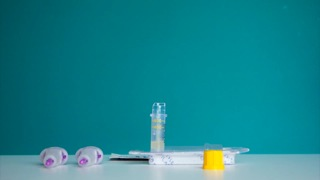
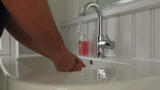

<div class="slideshow"
     data-pagination="false"
     data-transition="scroll"
     data-speed="300"
     data-auto="false"
     data-skip="true">
  <ul class="carousel">
    <li class="slide">
      
      <div class="slide-content">
        <h1>
          Doing the blood sample
        </h1>
        <p>
          <li>Find a clean flat surface</li>
          <li>Lay out the contents of the Blood sample</li>
          <li>Open the packaging containing the small yellow topped tube</li>
          <li>Remove the yellow top and keep nearby</li>
          <li>Place the tube in the packing to help keep it steady</li>
          <li>Have some dry clean tissues to hand</li>
        </p>
      </div>
    </li>
    <li class="slide">
      
      <div class="slide-content">
        <h1>
          Title goes here
        </h1>
        <ul>
          <li>Step 1</li>
          <li>Step 2</li>
          <li>Step 3</li>
        </ul>
      </div>
    </li>
    <li class="slide">
      
      <div class="slide-content">
        <h1>
          Title goes here
        </h1>
        <ol>
          <li>Step 1</li>
          <li>Step 2</li>
          <li>Step 3</li>
        </ol>
      </div>
    </li>
  </ul>
</div>
